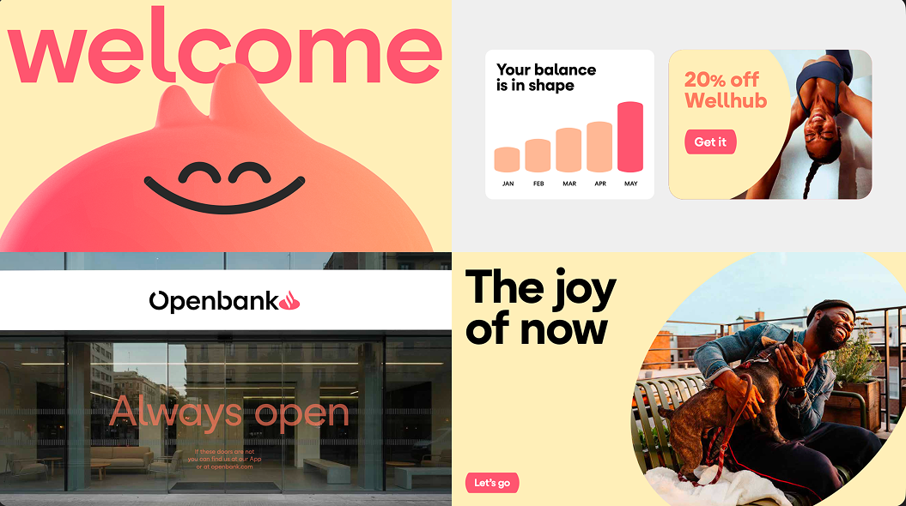
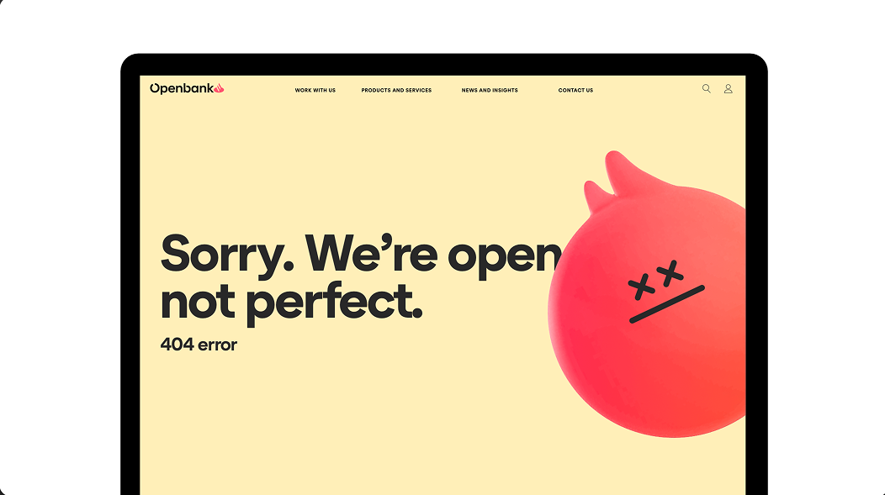
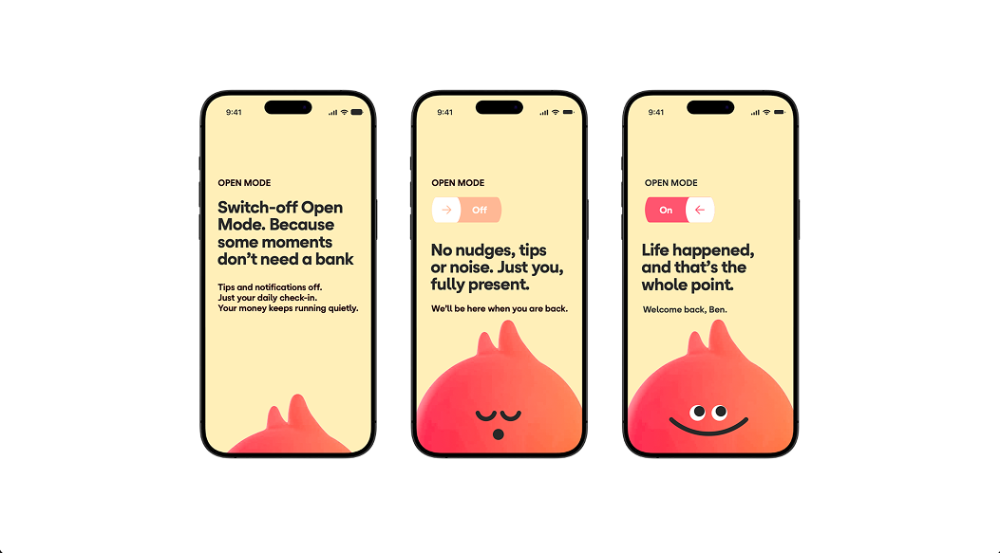
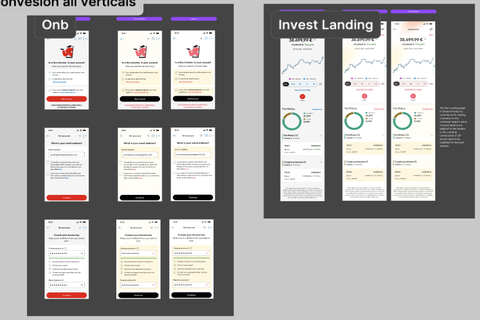
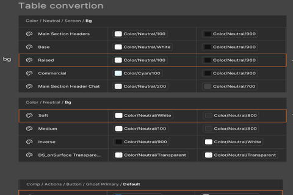
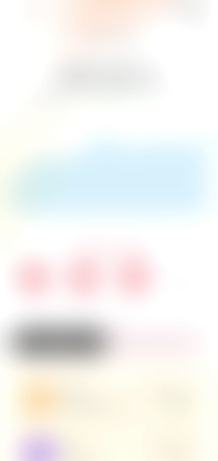

Openbank Redesign
Openbank went through a full brand redesign — new colors, typography, and logo. This is how those definitions were translated into the digital products, app and web.
Openbank rebuilt its brand from the ground up — new colors, new typography, a new logo. The work here was translating those definitions into every corner of the digital product.
The first MVP was kept intentionally narrow, to validate the approach before scaling it:
- Only onboarding, login, wealth and crypto — not the full product.
- Launched first in Germany and Spain, the two most mature markets.
- Progressive rebranding — the idea is to keep adapting and going deeper with each following MVP.



A warmer, more human palette
Every token in the design system maps back to these values — cream, coral and peach, anchored by black and white.
From master screens to a converted system
The screens themselves are confidential, so what's shown below is intentionally blurred — but the shape of the process is real.
01
Master screens
Defined proposals for key screens, applying the new brand styles for the first time.

02
Token analysis
Made sure the token conversion made sense and could be applied correctly across the whole design system.

03
Apply the conversion
Rolled the token conversion out across onboarding, login, wealth and crypto.

Confidential04
New themes & QA
Applied the new themes, then reviewed and followed up across the full scope.
Progressive rebranding — the idea is to keep adapting and going deeper with each following MVP.